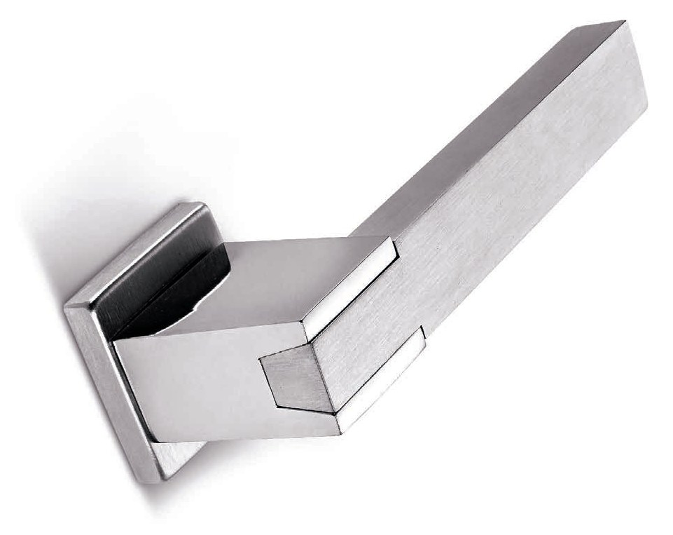

CREATURA
STV
14 / 16
Ручки для межкомнатных дверей

Ручки на розетке
Art. 600 · 620 · 650 · 1700 и другие
Ручки с розетками под ключ, под цилиндр и WC; сочетаются с замками STV.
Розетки
под ключ, цилиндр, WC · 45 мм
Окно
версии с механизмом DK